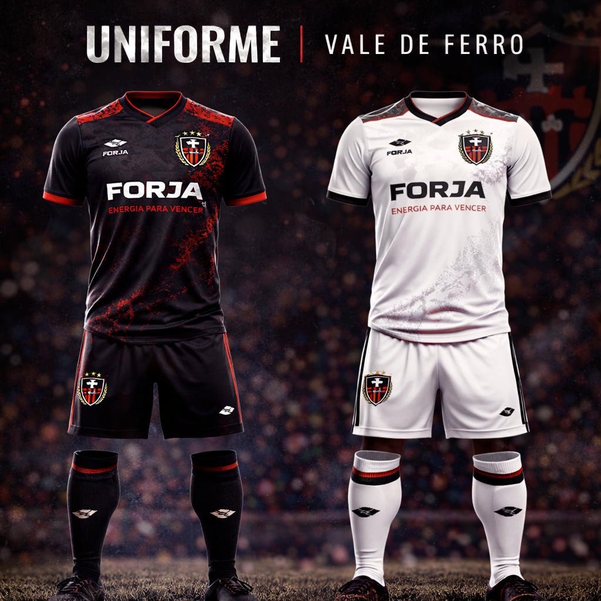
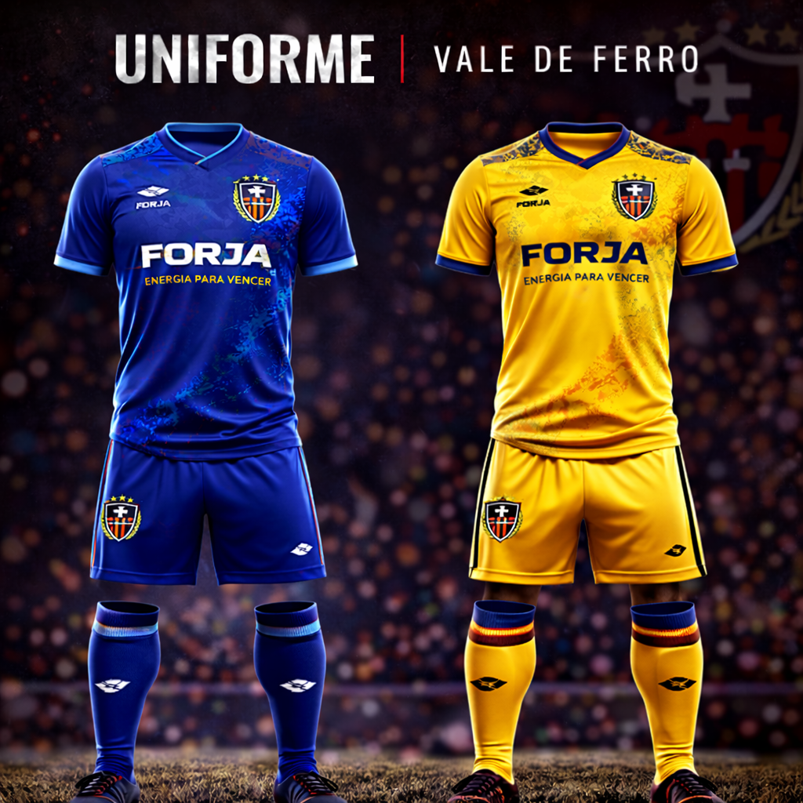
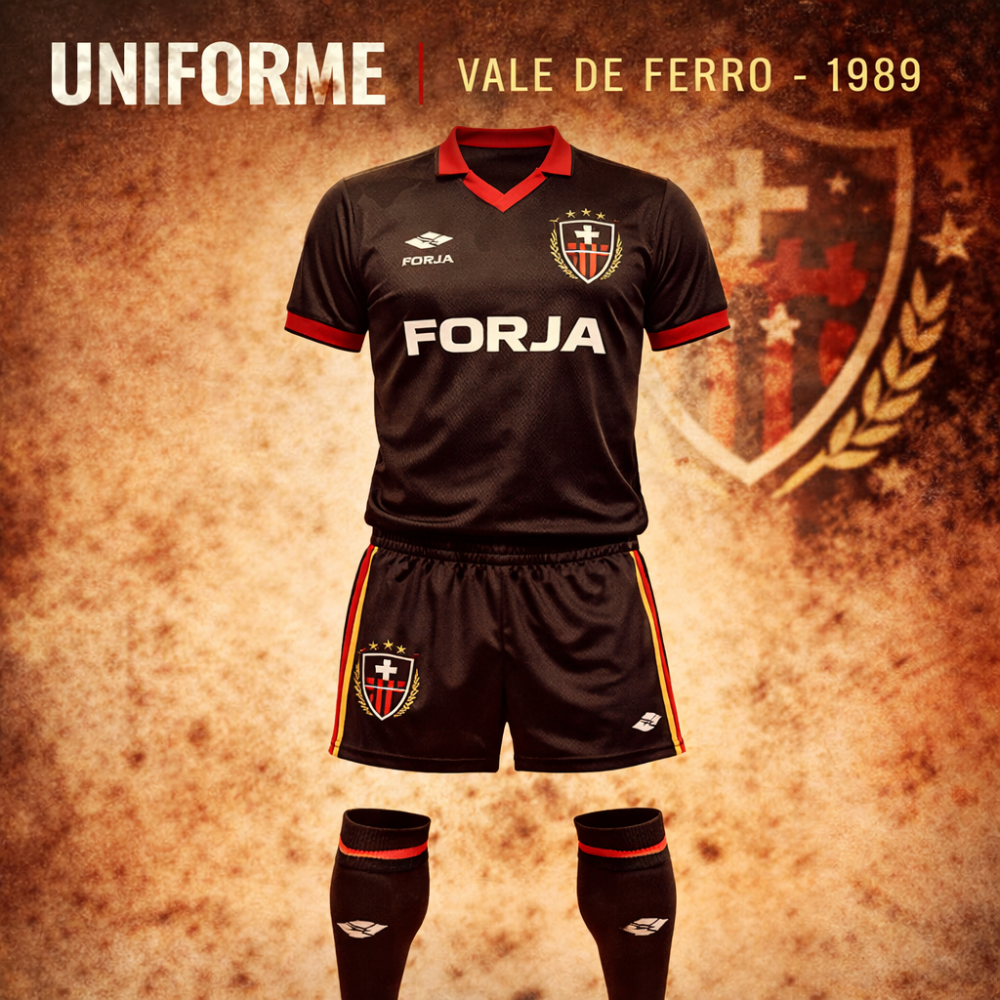

Vale de Ferro was born from a simple and powerful idea: to turn work, unity, and pride into football. Founded by workers from a Anbarzia industrial region, the club grew based on discipline, courage, and love for the shirt. What started as a factory team became a symbol of resistance and tradition.
Vale de Ferro was created in 1987 by workers from an industrial area known as Vale de Ferro. At first, the team only played neighborhood matches and amateur tournaments between factories and communities in the region. The strength of the group came from the unity between friends, family members, and coworkers, who saw football as a way to represent their identity.
During the first years, the club faced simple fields, limited structure, and many challenges. Even so, the competitive spirit was never missing. Over time, the team began to stand out in local tournaments, drawing attention for its intensity on the field and for its ever-growing fan base.
In the 2000s, Vale de Ferro went through a period of growth. New supporters, improved infrastructure, and a more solid sports project helped the club move up a level. From then on, the team was no longer just a regional promise and began competing in bigger competitions with real title ambitions.
Over the years, Vale de Ferro built a strong identity not only through its performances, but also through the uniforms that marked each era of the club. Some became memorable for their modern design, others for their bold color combinations, and some for bringing back the tradition and roots of the team.

This image brings together two of the club’s most recognizable modern uniforms. The black and red home kit became the strongest symbol of Vale de Ferro’s identity, reflecting intensity, strength, and personality. Alongside it, the white away kit offers a cleaner and more elegant variation, while still preserving the same visual language and club symbolism.

These alternate uniforms stand out for their bold and memorable color choices. The blue version gives the team a more modern and technical appearance, while the yellow version delivers a vibrant and daring look. Even with different colors, both maintain the same design pattern and reinforce the versatility of Vale de Ferro’s identity.

Inspired by the club’s early years, the 1989 retro kit represents tradition, history, and the working-class origins of Vale de Ferro. With a more classic visual style, it recalls the period when the club was still building its reputation and identity. It is one of the most nostalgic and historically meaningful uniforms in the club’s memory.